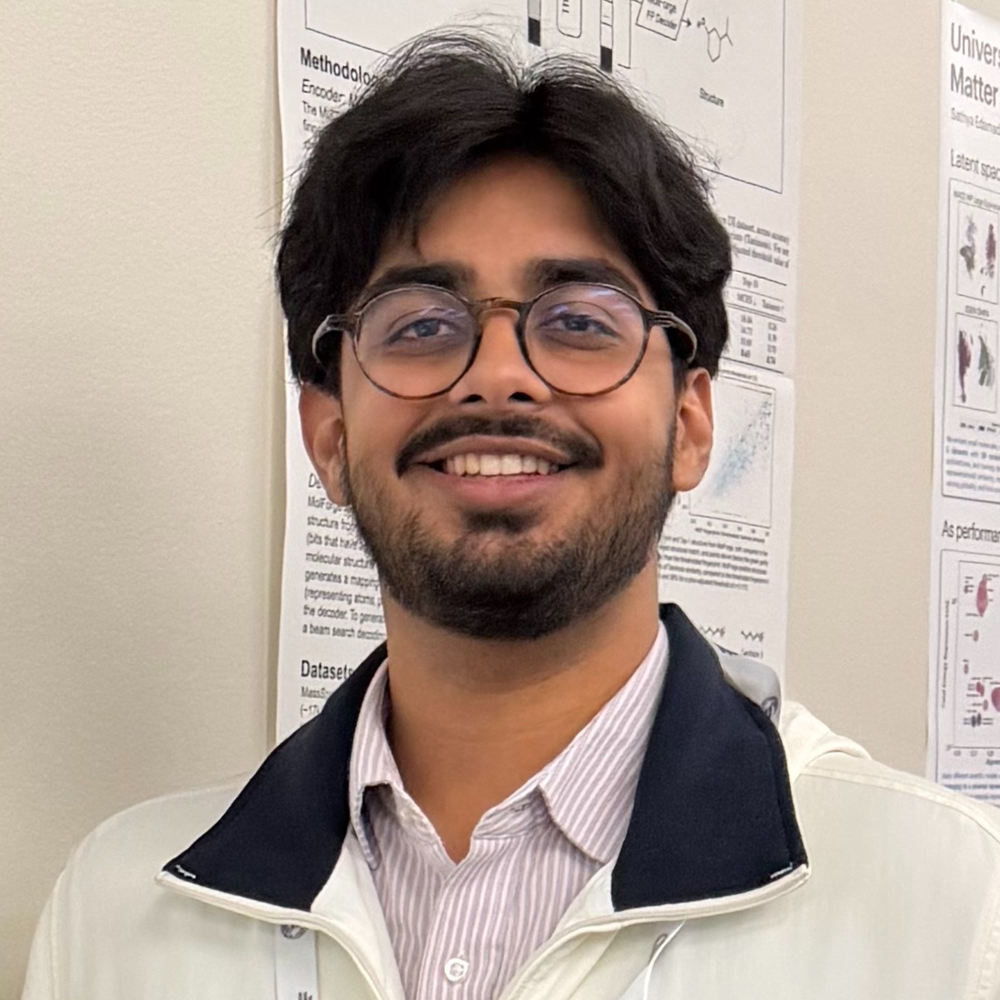
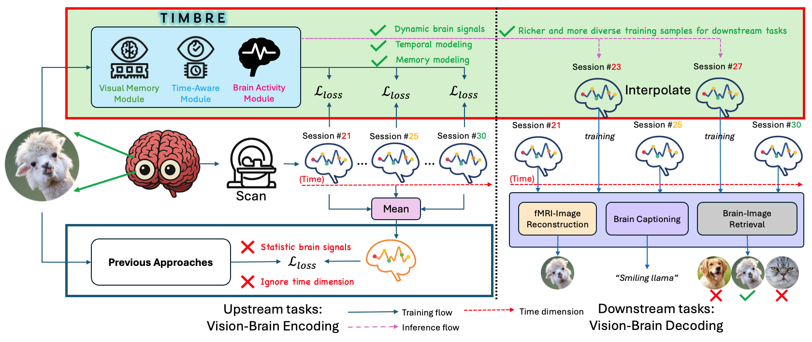
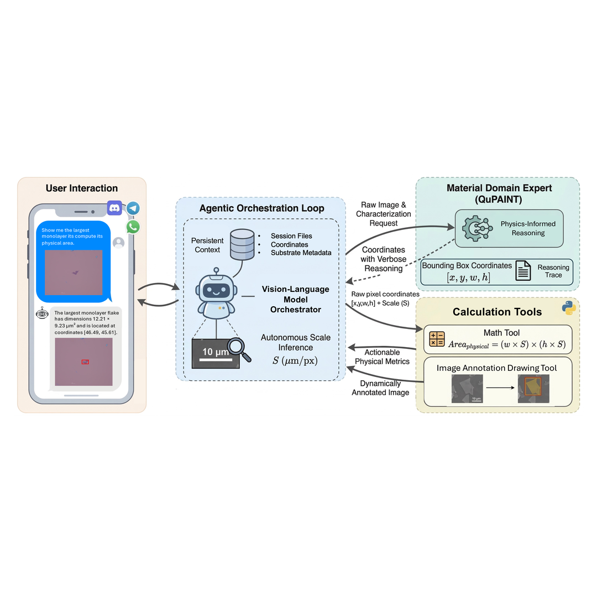
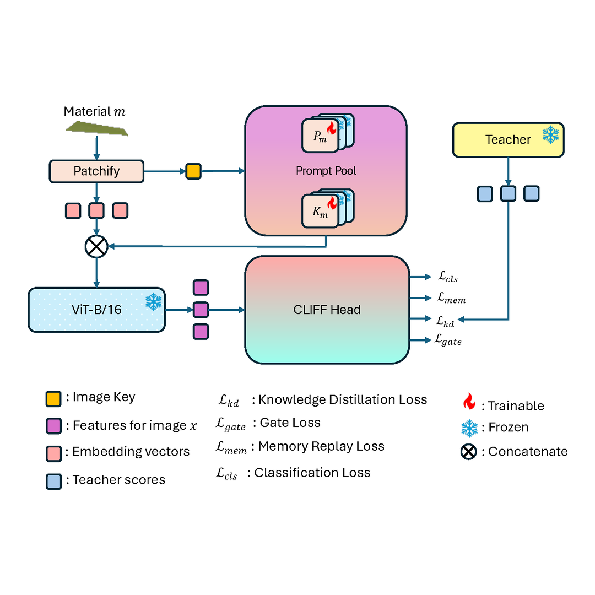
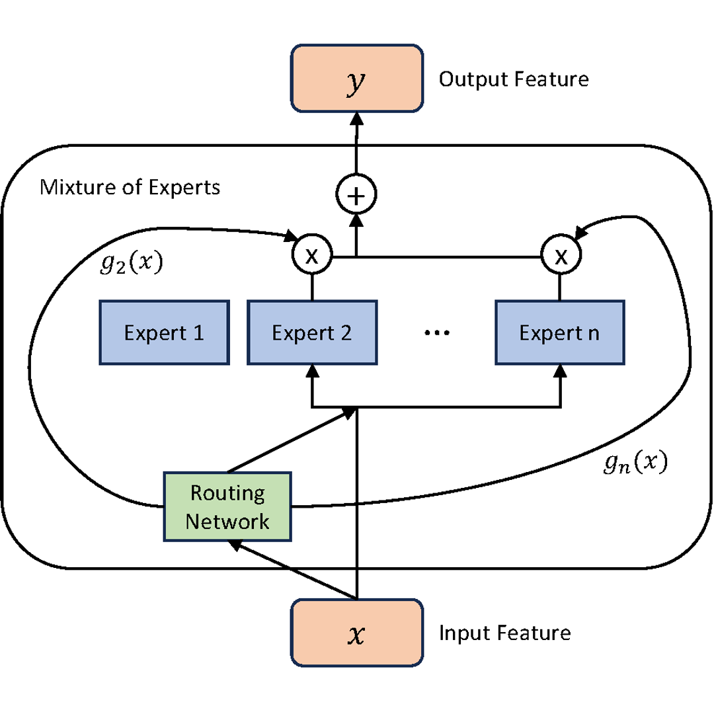
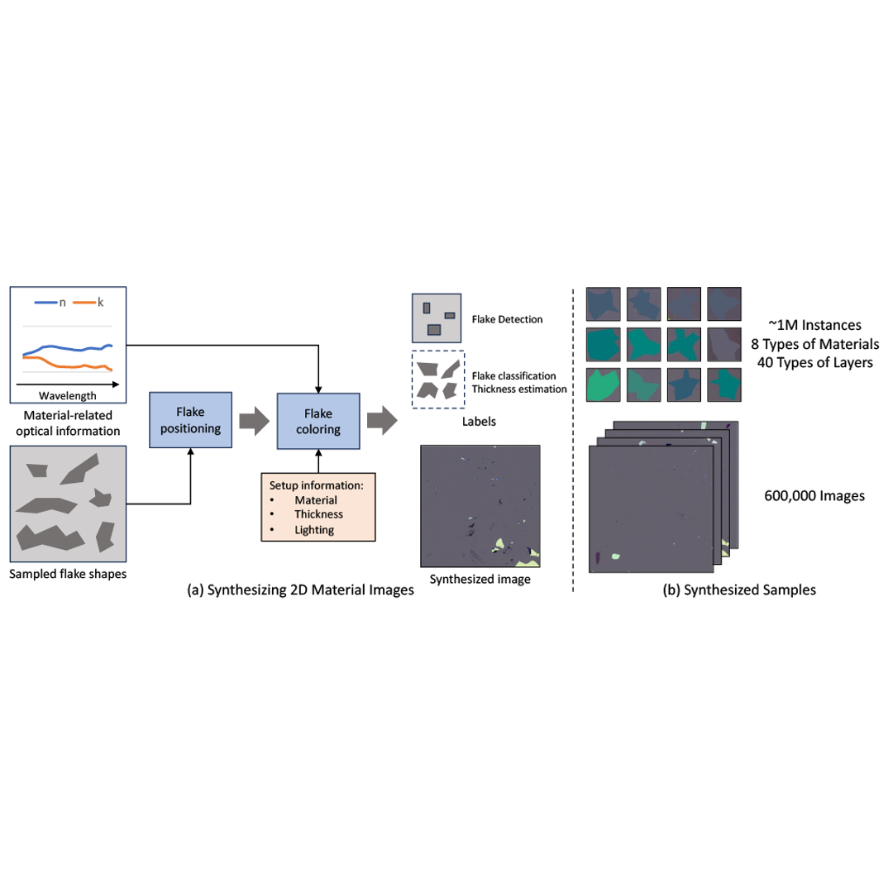

Hello, I'm Sankalp Pandey
I am a final-year honors undergraduate at the University of Arkansas pursuing B.S. degrees in Computer Science and Computer Engineering. I work as a research assistant in the Quantum AI Lab and the Computer Vision and Image Understanding Lab advised by Dr. Khoa Luu.
My research focuses on multimodal reasoning for scientific discovery, with applications in vision-brain modeling and quantum materials.
Aside from my work, I enjoy tinkering with new ideas, playing tennis, and running trails!
Updates
- Apr. 2026: Successfully defended Honors Thesis titled: "Autonomous Agentic Orchestration for Physics-Aware Scientific Discovery: An Integrative Multimodal Framework for 2D Material Characterization".
- Apr. 2026:Named a Senior of Significance for the Spring 2026 graduating class, an honor recognizing 71 of ~6,000 graduates for leadership, achievement, and impact.
- Mar. 2026: Authored the OpenQlaw technical report and presented related work at the International Workshop on Automated 2D Materials and Quantum Devices.
- Mar. 2026: QuPAINT was accepted to CVPR Findings 2026.
- Feb. 2026: Awarded the Distinguished Doctoral Fellowship by the University of Arkansas.
- Jan. 2026: Accepted to the Ph.D. in Engineering (Computer Science) program at the University of Arkansas.
- Oct. 2025: CLIFF was accepted to the NeurIPS 2025 AI for Accelerated Materials Discovery Workshop.
- Sep. 2025: Featured by the University of Arkansas Honors College for research in quantum machine learning.
- Jul. 2025: Ranked 5th out of 67 teams in the Algonauts 2025 Vision-Brain Encoding Challenge.
- Jul. 2025: Awarded an Honors College Conference Travel Grant to present at a NeurIPS workshop.
- Jun. 2025: Featured by the University of Arkansas Honors College for research in neuroscience and nanomaterials.
- Apr. 2025: QMoE was accepted to the Quantum Computing & Reinforcement Learning Workshop at IEEE Quantum Week 2025.
- Feb. 2024: Joined the Computer Vision & Image Understanding Lab as an undergraduate research assistant.
Publications

TIMBRE: Time-aware Multimodal Vision-Brain Encoding
Xuan-Bac Nguyen, Sankalp Pandey, Suhyun Kim, Hojin Jang, Arabinda Kumar Choudhary, Khoa Luu
A time-aware multimodal framework that models temporal neural dynamics to improve vision-brain encoding.
Under review, 2026

OpenQlaw: An Agentic AI Assistant for Analysis of 2D Quantum Materials
Sankalp Pandey, Xuan-Bac Nguyen, Hoang-Quan Nguyen, Tim Faltermeier, Nicholas Borys, Hugh Churchill, Khoa Luu
An agentic assistant that orchestrates multimodal experts to support interactive analysis and physical reasoning for 2D quantum materials.
Technical Report, 2026
QuPAINT: Physics-Aware Instruction Tuning Approach to Quantum Material Discovery
Xuan Bac Nguyen, Hoang-Quan Nguyen, Sankalp Pandey, Tim Faltermeier, Nicholas Borys, Hugh Churchill, Khoa Luu
A physics-aware instruction-tuning pipeline that improves multimodal reasoning for quantum material discovery.
CVPR Findings, 2026

CLIFF: Continual Learning for Incremental Flake Features in 2D Material Identification
Sankalp Pandey, Xuan-Bac Nguyen, Nicholas Borys, Hugh Churchill, Khoa Luu
A continual learning strategy for incremental flake-feature identification with reduced catastrophic forgetting.
NeurIPS AI for Accelerated Materials Discovery Workshop, 2025

QMoE: A Quantum Mixture of Experts Framework for Scalable Quantum Neural Networks
Hoang-Quan Nguyen, Xuan-Bac Nguyen, Sankalp Pandey, Samee U. Khan, Ilya Safro, Khoa Luu
A quantum mixture-of-experts architecture that routes inputs to specialized experts for scalable quantum neural networks.
IEEE QCE QCRL Workshop, 2025

φ-Adapt: A Physics-Informed Adaptation Learning Approach to 2D Quantum Material Discovery
Hoang-Quan Nguyen, Xuan-Bac Nguyen, Sankalp Pandey, Tim Faltermeier, Nicholas Borys, Hugh Churchill, Khoa Luu
A physics-informed adaptation method for robust 2D quantum material characterization across imaging domains.
Preprint, 2025